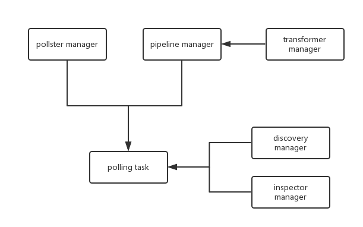

Ceilometer 中 meter 的流程（一）
介绍
在 ceilometer 中一个 meter 的生命周期可以大概归纳为：
这一篇写的是 meter 的采集。
meter的采集
以 agent_compute 为例，采集 meter 整个流程大概如下：
- ceilometer-agent-compute 服务初始化
- 初始化 pollster manager，即系统中实现的采集扩展（extensions）
- 初始化 discovery manager，用于获取资源，这里就指的是云主机
- 初始化 inspector manager，即 meter 数据的采集器（调用Hypervisor的API），其中实现了具体的数据收集
- 获取 pipeline manager，即配置文件 pipeline.yram 中定义的采集项，及其采集周期和数据发送方式
- 以 pipelines 和 extensions 的笛卡尔积产生 polling task，并放入线程池
- 每一个 task 中，调用 get_samples() 收集到数据，通过 publisher 发送出去
- get_samples() 调用 inspector manager 中对应的采集器获取数据
如图：

stevedore
借助 steuptools 的 entry points，可以方便的管理应用程序插件，动态的加载类，三种方式：
- Drivers – Single Name, Single Entry Point
- Hooks – Single Name, Many Entry Points
- Extensions – Many Names, Many Entry Points
ceilometer 使用了 Extensions 的方式，包括 pollster manager、discovery manager、inspector manager，以pollster manager为例：
ceilometer/agent.py
1 | class AgentManager(os_service.Service): |
这里的 namespace 是ceilometer.poll.compute，对应到 entry_point 文件中是
1 | ceilometer.poll.compute = |
最后返回self.pollster_manager是一个extension.ExtensionManager，其中包含多个采集扩展的实例。
流程
启动服务
ceilometer/cmd/agent_compute.py 中的main()做最终调用 ceilometer/agent.py 中类 AgentManager 的start()
1 | def start(self): |
- publish_pipeline.setup_pipeline()，读取配置文件 pipeline.yaml，返回 PipelineManager 实例
- self.setup_polling_tasks()
1
2
3
4
5
6
7
8
9
10
11
12
13def setup_polling_tasks(self):
polling_tasks = {}
for pipeline, pollster in itertools.product(
self.pipeline_manager.pipelines,
self.pollster_manager.extensions):
if pipeline.support_meter(pollster.name):
polling_task = polling_tasks.get(pipeline.get_interval())
if not polling_task:
polling_task = self.create_polling_task()
polling_tasks[pipeline.get_interval()] = polling_task
polling_task.add(pollster, pipeline)
return polling_tasks
pipelines 与 pollster 笛卡尔积，判断 pipelines 中是否包括对 pollster 中的 meter 的采集配置，若支持，添加到 polling_task，而 polling_task 在 polling_tasks 以轮询时间为 key 来形成字典，形如* 遍历 polling_tasks，添加到线程池1
{interval:polling_task.add(pollster, pipeline)}
polling_task
具体的单个 polling_task 的运行
1
2
3@staticmethod
def interval_task(task):
task.poll_and_publish()1
2
3
4
5
6
7
8
9
10
11
12
13
14
15
16
17
18
19
20
21
22
23
24
25class PollingTask(object):
…
def poll_and_publish(self):
“””Polling sample and publish into pipeline.”””
agent_resources = self.manager.discover()
cache = {}
discovery_cache = {}
for source, pollster in self.pollster_matches:
pollster_resources = None
if pollster.obj.default_discovery:
pollster_resources = self.manager.discover(
[pollster.obj.default_discovery], discovery_cache)
key = Resources.key(source, pollster)
source_resources = list(self.resources[key].get(discovery_cache))
with self.publishers[source.name] as publisher:
try:
samples = list(pollster.obj.get_samples(
manager=self.manager,
cache=cache,
resources=(source_resources or
pollster_resources or
agent_resources)
))
publisher(samples)
…
- 关于这里的
resources=(source_resources or pollster_resources or agent_resources)，resources 是一个包含了 vm 及其信息的 list，第一次运行的时候等于 agent_resources。 - 这里使用提供的 discover（compute_agent 提供的是 local_instances）去匹配 discover manager 中的 discover，返回一个其 discover 实例，即 ceilometer/compute/discover.py:InstanceDiscovery 实例，返回其实例方法 discover() 得到的 vms。值得注意的是 ceilometer/compute/discover.py:InstanceDiscovery
1
2
3
4
5def discover(self, manager, param=None):
“””Discover resources to monitor.”””
instances = self.nova_cli.instance_get_all_by_host(cfg.CONF.host)
return [i for i in instances
if getattr(i, ‘OS-EXT-STS:vm_state’, None) != ‘error’]
如果 vm 的 status 是 error 的不返回。
单个 meter
以 cpu 为例，上节的 poll_and_publish() 中的 pollster.obj.get_samples()
ceilometer/compute/pollster/cpu.py:CPUPollster
1
2
3
4
5
6
7
8
9
10
11
12
13
14
15
16
17
18
19def get_samples(self, manager, cache, resources):
for instance in resources:
LOG.debug(_(‘checking instance %s’), instance.id)
instance_name = util.instance_name(instance)
try:
cpu_info = manager.inspector.inspect_cpus(instance_name)
LOG.debug(_(“CPUTIME USAGE: %(instance)s %(time)d”),
{‘instance’: instance.dict,
‘time’: cpu_info.time})
cpu_num = {‘cpu_number’: cpu_info.number}
yield util.make_sample_from_instance(
instance,
name=‘cpu’,
type=sample.TYPE_CUMULATIVE,
unit=‘ns’,
volume=cpu_info.time,
additional_metadata=cpu_num,
)
…
- 循环 resources（即 vms），调用 inspector manager 中其对应的 inspector 实例的 inspect_cpus() 获取 cpu 时长，具体实现调用了 libvirt 的 API：
ceilometer/compute/virt/libvirt/inspector.py:LibvirtInspector* 得到所有 vms 的 cpu 使用时长数据，使用 publisher(samples)1
2
3
4def inspect_cpus(self, instance_name):
domain = self._lookup_by_name(instance_name)
dom_info = domain.info()
return virt_inspector.CPUStats(number=dom_info[3], time=dom_info[4])